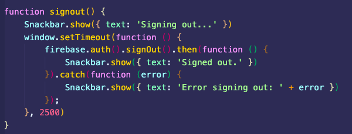
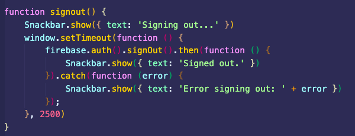

Creation Blog Section 1
February 21 | Planning
This work period was spent mostly planning the solution, setting up firebase, creating the Git repo, and loading all the stylesheets. I also worked on learning more about the actual idea so I could create a more practical solution for my client. Although the basic preparation of the webapp is done, more changes will be made to my plan later.
Proprietary Styles Daemonite Material Firebase Console Firebase Documentation Gitlab RepoRelevant Photos:
February 25 | C/D Page Preparation & Research
Since most of the marks are based on the writeup, I decided to get a head start on the writeup by setting up the basic layout such as this blog right here and the gitlab and website. I also overlooked the rubric and made sure everything I was planning aligned with what is required and the skeleton page I created for the C/D writeup would match the rubric's guidelines and specifications. Additionally, I researched things like firebase security rules and more in order to ensure the product was possible and that I was capable of building it by advancing researching as soon as possible.
Firebase Console Google Sites Y9 Design Gitlab Firebase Documentation RepoRelevant Photos:
February 27 | Starting Building
Since the bulk of the work and the more meaningful part of the work will be on the actual product, I decided to at least setup firebase and a basic sign in function on the page. Without any styling or anything setup although it was loaded in, I just wanted to make sure everything worked and that I could quickly setup a functioning teacher view and student view to confirm I was on the right track.
Firebase Console Firebase Documentation Documentation Authentication Product Repo Design RepoRelevant Photos:
March 2 | Feedback #1 Session
Mr. Buttery provided me with a template that I could follow to create some of the inputs as well as some similar products to go off of. There are important team-based features such as the ability to view the students from the teacher view and manage their progress. I also wanted to include something like this in the teacher view so I made some design about it in my head and planned to build it later on. But for this session, I mainly focused on the template and making it into inputs.
Firebase Console Firestore Daemonite Text Fields Product Repo Design RepoRelevant Photos:
 

March 4 | Continuing with Building
As usual, I continued with building the platform to allow for more much needed features such as the ability to create workouts and to enhance security features with the admin panel. I also decided to have everything done through cards to create a better sence of heriarchy with the elements and it should be understandable for most people. Additionally, I decided to rename some pages and add some descriptions to pages to make it more user friendly and generally commit more to the material design theme that I was so far following. Some sreenshots below include the workout view which took a while and would build all the workouts as a preview. The links are the same because I was using the same sources as always. The stuff built here was also built during my free time during the online classes breaks and after classes.
Firebase Console Firestore Daemonite Product Repo Design RepoRelevant Photos:

March 23 | Working on the Writeup
I did realize that I hadn't done enough work for the writeup and this has a due date whereas I could always make updates to my product as more features are needed so i decided to prioritize my time to the writeup as I should and was advised to do by Mr. Hoel. Additionally, I enhanced the writeup by adding images and more detail to achieve the higher marks. More detail and being more specific is what I focused on when building this part of the writeup less than the actual look of the page although the material design in this write up does look very good!
Daemonite Design RepoRelevant Photos:

March 25 | Writeup & Building Combination
Building the writeup and constructing the final product was my focus during this period of time between classes. I had time to work on the lesser features I hadn't done before such as the more and profiles tab which I have screenshots below. I also added some nice animations and a better looking sign in page which I am very proud of because of the fancy logo. The sign out button has a delay for a few reasons: To prevent spam which I was reading on and to prevent people from evading punishments to their accounts which I will be adding in a future update.
Proprietary Styles Daemonite Material Firebase Console Firebase Documentation Gitlab Product Repo Design RepoRelevant Photos:

March 27 | Finalizing Features / Bug Fixes / Writeup
Without adding more non-essential features, I fixed lots of bugs from duplicating workouts to unchecked git issues. Other than that, the majority of my time was spent working on the writeup so I could get it done by the deadline which is tomorrow (today :O) as of when I am writing this. I figure that I should be focussing more on this than the product because I will definitely be updating the product since it will actually be in use by the school and Mr. Buttery which is cool. Lots of changes will be added in the future to account for the bare minimum amount of features which I will discuss with him later. Additionally, I made it very easy for the end user to view the basic functionality of the page and not have very many problems. As for going live and possibly getting a domain, that will be sorted out later after the final changes are made.
Proprietary Styles Daemonite Material Firebase Console Firebase Documentation Gitlab Product Repo Design Repo